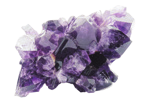
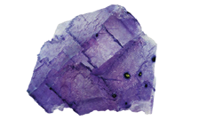
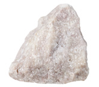
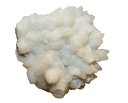
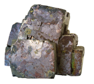
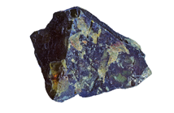
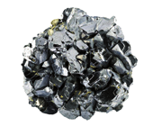
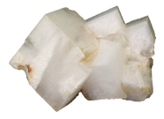

Atendiendo a su composición, los minerales se pueden clasificar en dos grupos: silicatos y no silicatos.
Son los minerales más abundantes en la superficie de la Tierra y se caracterizan porque incluyen oxígeno y silicio en su composición. Son ejemplos de silicatos el cuarzo, el olivino, la ortosa, la biotita y la moscovita.
  Están compuestos por carbono, oxígeno y un metal. Son los componentes principales de la roca caliza. La calcita y la dolomita son dos minerales más significativos de este grupo.
Están formados por cloro o flúor y un metal. Son solubles en agua. Los minerales más representativos del grupo son la fluorita y la halita.
Están compuestos por oxígeno y uno o más metales. No son solubles en agua. El oligisto y la magnetita son dos óxidos de hierro.
Están formados por azufre, combinado con un metal. La blenda y la galena son sulfuros de los que se obtienen metales.
Contienen azufre, oxígeno y un metal. La mayoría de ellos son solubles en agua. El yeso y la celestina son sulfatos.
